visStatistics: The right test, visualised
Sabine Schilling
Institute of Tourism and Mobility, Lucerne University of Applied Sciences and Artssabineschilling@gmx.ch
2026-05-19
Source:vignettes/visStatistics.Rmd
visStatistics.RmdAbstract
visStatistics provides a workflow for routine
two-variable frequentist inference in R. Given two vectors,
visstat() dispatches by variable classes, factor levels,
sample sizes, expected cell counts, and explicit user options. Its main
assumption-driven branch concerns tests of central tendency for a
numeric response grouped by a factor. There, p-values from a normality
test on pooled standardised residuals from a linear model fitted to all
groups guide the choice between rank-based and mean-based procedures; a
Levene test then selects between equal-variance and Welch-type variants.
The output is deliberately visual: diagnostic plots are shown together
with assumption-test p-values, the selected test, effect size, and
post-hoc results where applicable.
Introduction
In the frequentist tradition, most routine data analyses reduce to a
comparatively small set of inferential frameworks, including group
comparisons, regression models and contingency-table analyses Brodeur et al. (2020); their correct use depends on
assumptions that are often checked informally or not at all.
visStatistics targets this gap by making routine
frequentist test selection explicit, assumption-aware, visual, and
reproducible. Rather than requiring users to choose the test function
first, visstat() starts from two variables and routes
common two-variable settings through a fixed decision workflow. It
selects a test from the variable classes, distributional assumptions,
sample size, and expected cell counts; displays the diagnostics that led
to the selected route; and returns an R object whose
print() and summary() methods expose the
complete test results, including the reported effect size. The scripted
workflow is well suited for browser-based applications where sensitive
data (such as highly confidential medical records) are stored securely
on a server and cannot be directly accessed by users. This approach was
already successfully applied to develop a medical scoring tool (Bijlenga et al.
2017).
For group comparisons, packages with related scope include
automatedtests (Zeevat 2025), autotestR
(autotestR:2026?),
boxTest (Sau et al. 2025), and
compareGroups (Subirana et al. 2014). For
mean-based tests in the general linear-model framework, the normality
assumption concerns the model errors, not the marginal response
distribution. None of these packages bases routing on pooled
standardised residuals from a linear model fitted to all groups.
autotestR and boxTest test the response
separately within groups, adding a multiple-testing problem;
automatedtests and compareGroups test the
ungrouped numeric response, so group-location differences are included
in the vector being tested. In contrast, visStatistics
bases the central-tendency branch on pooled standardised residuals,
adhering to the general linear model framework (Thompson
2015).
compareGroups is primarily designed for bivariate
descriptive tables and reports, not diagnostic plots and test
visualisations (Subirana et al. 2014).
boxTest covers only the two-group numeric-response case
(Sau et al.
2025). autotestR provides automated
recommendations for basic tests, including t-tests, ANOVA, correlation,
and contingency-table analyses (autotestR:2026?).
The closest package in scope is automatedtests (Zeevat 2025),
which also provides a single function for automatic routing among common
tests. Its routing is broader than that of visStatistics,
including one-sample, paired, repeated-measures, and regression-model
cases. However, much of this automation is class- and shape-based
dispatch: the selected procedure is determined only from the number and
classes of variables, the number of factor levels, pairing information,
and a small set of input-level checks.
visStatistics is narrower by design. It restricts itself
to common two-variable settings in which the route can be visualised and
audited: pretesting where applied, residual-based diagnostics for the
linear-model family, the selected test, full test statistics, effect
size, result plots, and post-hoc comparisons where required.
Getting started
1. Install the latest development version from GITHUB
install_github("shhschilling/visStatistics")3. Minimal function call
The function visstat() accepts input in three ways:
# Standardised form (recommended):
visstat(x, y)
# Formula interface:
visstat(y ~ x, data = dataframe)
# Backward-compatible form:
visstat(dataframe, "namey", "namex")x and y must be vectors of class
"numeric", "integer", or
"factor". The visstat() parameter
conf.level defaults to 0.95, equivalent to a default
significance level of
.
In the formula interface, y ~ x specifies the
relationship, where y is the response variable and
x is the predictor, with both being column names in
dataframe.
In the backward-compatible form, "namex" and
"namey" must be character strings naming columns in
dataframe, which must themselves be of class
"numeric", "integer", or
"factor". Note that in the backward-compatible form the
second argument belongs to the response, the third to the predictor.
This is equivalent to writing:
visstat(dataframe[["namex"]], dataframe[["namey"]])Package overview
visStatistics is available on CRAN. This vignette
corresponds to the current GitHub version (https://github.com/shhschilling/visStatistics), which
may differ slightly from the latest CRAN release. The main function
visstat() returns an object of class "visstat"
with print(), summary(), and
plot() methods. The returned object also contains an
effect_size field with the effect-size name, numeric
estimate, and method description (see Appendix
D). From this single entry point, the package automatically selects
among the implemented tests: t.test(),
wilcox.test(), aov(),
oneway.test(), kruskal.test(),
chisq.test(), fisher.test(),
lm(), or cor.test().
Decision logic
The decision logic of visstat() is driven by the class
of its input vectors:

Overview of all implemented tests selected based on input class.
Numeric responses with categorical predictors enter the
central-tendency branch; two unordered factors enter the
proportion-comparison branch; two numeric variables enter simple linear
regression unless correlation = TRUE, which switches to
Spearman rank correlation; and two ordered factors are analysed as
Kendall rank correlation when correlation = TRUE.
Definitions of all implemented test statistics and association measures
are referenced in Appendix C.
Decision logic based on the assumptions of the general linear model framework
Student’s t-test, Fisher’s ANOVA, and simple linear regression all belong to the general linear model framework (see Appendix A) and thus share a common set of assumptions: the expected value of the response is a linear function of the predictors, the error terms are independent and normally distributed with expectation 0, and the error variance is constant at . Therefore the test selection for tests of central tendencies is steered by checking the fitted model residuals in regard to these assumptions.
In the following subsections, we detail the decision logic following the structure of the overview figure.
Numeric response and categorical predictor: comparing central tendencies
The following figure expands the central-tendency branch.
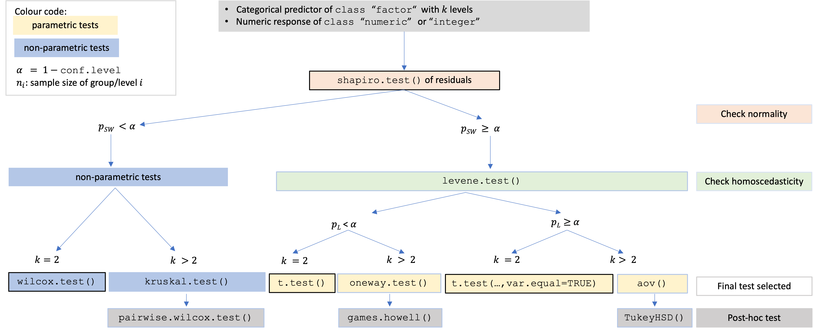
Decision tree for tests on central tendencies. If all groups contain more than 50 observations, the formal residual normality test is bypassed and variance homogeneity is assessed directly. Otherwise, Shapiro–Wilk on standardised residuals determines whether the route remains mean-based or switches to rank-based tests; the Levene test then selects equal-variance or Welch-type procedures.
Unless stated otherwise, R function names refer to functions from the
stats package distributed with R (R Core Team 2026).
The first split checks group size. When all groups contain more than
50 observations, the normality of the sampling distribution of the group
means can be assumed by the central limit theorem (Lumley et al. 2002; Rasch et al. 2011), and the residual
normality test is bypassed to avoid rejecting negligible deviations in
large samples (Ghasemi and Zahediasl 2012; Fagerland 2012; Shatz 2024). Otherwise, a linear model
lm(y ~ x) (see Appendix A) is fitted,
assumption diagnostic plots are displayed (for details see Assumption diagnostics), and the Shapiro–Wilk
(SW) test is applied to internally studentised residuals from
rstandard() (Cook and Weisberg 1982).
If normality is rejected
(),
non-parametric tests are selected: wilcox.test() for two
groups, or kruskal.test() followed by Holm-adjusted
pairwise.wilcox.test() for more than two groups.
If normality is not rejected, variance homogeneity is assessed with
Levene’s test using the Brown–Forsythe median-centred modification
(package-implemented levene.test(); (Brown and Forsythe
1974); see Appendix C). For brevity, we
refer to this Brown–Forsythe Levene-type procedure as the Levene test
below. For homoscedastic data, t.test(var.equal = TRUE) is
applied for two groups, or Fisher’s aov() with
TukeyHSD() for more than two groups. For heteroscedastic
data, Welch’s t.test() is applied for two groups, or
Welch’s oneway.test() with the package implementation
games.howell() ((Games and Howell 1976); see Appendix C) for more than two groups.
Graphical output
The first panel shows the linear-model assumption diagnostics. It
contains a histogram of the standardised residuals with a standard
normal density overlay, a plot of standardised residuals against fitted
values, a normal Q–Q plot, and a scale-location plot (replaced by a
standardised residuals vs. leverage plot with Cook’s distance contours
in the regression branch). The latter three are inherited from
plot.lm(), while the histogram is added to make the
residual distribution directly visible. The title reports the
Shapiro–Wilk and Anderson–Darling normality tests together with
Bartlett’s and Levene tests for homoscedasticity (Breusch–Pagan in the
regression branch). Shapiro–Wilk drives the parametric/non-parametric
routing decision; Anderson–Darling is shown for reference only. The
Levene test drives the equal-variance/Welch routing decision; Bartlett
is shown for reference only.
The final panel shows the selected test as box plots with sample sizes above each group. For the parametric branches, the title also reports the corresponding statistic. When the largest group has no more than 50 observations, jittered points are overlaid to show the raw data.
The box plots are enriched with significance letters to visualise the post-hoc analysis:
ANOVA, Welch ANOVA, and Kruskal–Wallis are omnibus tests: a
significant result tells us that some group differs, but not
which. To identify the differing pairs, visstat() tests all
pairwise comparisons among the factor levels, defining a family of
tests. Because the three omnibus tests rest on different assumptions,
each branch uses a matching post-hoc procedure: TukeyHSD()
after aov(), games.howell() after
oneway.test(), and
pairwise.wilcox.test(p.adjust.method = "holm") after
kruskal.test(). TukeyHSD() controls the
family-wise error rate through the studentised range distribution under
a common-variance assumption. games.howell() uses separate
variance estimates and Welch-adjusted degrees of freedom for each pair,
making it the post-hoc procedure for the heteroscedastic Welch branch.
The Kruskal–Wallis branch uses Holm’s step-down adjustment for the
pairwise Wilcoxon tests. Pairs whose adjusted post-hoc
-value
falls below
are marked with different green significance letters below the box
plots; pairs sharing a letter are not significantly different.
Both variables numeric: regression or Spearman rank correlation
When both predictor and response are numerical,
visstat() fits and displays a simple linear regression. The
standardised residuals from lm() are assessed graphically
and with the Shapiro–Wilk and Anderson–Darling tests; homoscedasticity
is assessed with the package-implemented Breusch–Pagan test
(bp.test(); see Appendix C). The
regression plot shows the fitted line
with pointwise confidence and prediction bands at the specified
conf.level. The returned object contains the regression
statistics, residual-normality tests, pointwise confidence and
prediction bands, and the effect size
.
When correlation = TRUE is set explicitly, Spearman’s
is computed via cor.test(..., method = "spearman"). Because
the choice between modelling a directional relationship and measuring a
monotone association cannot be automated from data types alone, Spearman
correlation is never triggered automatically. Spearman’s
is Pearson’s correlation applied to ranks; see Appendix
C.
Both variables categorical: comparing proportions
Observed frequencies are arranged in a contingency table, where rows
index the levels of the response and columns index the levels of the
predictor. visstat() tests independence using Pearson’s
test (chisq.test()) or Fisher’s exact test
(fisher.test()), depending on expected cell counts
following Cochran’s rule (Cochran 1954): the
approximation is used if no expected cell count is less than 1 and no
more than 20% of cells have expected counts below 5. Yates’ continuity
correction is applied by default to
tables. The graphical output depends
on the selected test. General
Pearson
tests show a grouped column plot of row percentages with the
-value
in the title, followed by a mosaic plot from vcd (Meyer et al. 2006, 2024) with tiles coloured by Pearson
residuals. Yates-corrected
tests show the grouped column plot only, because the corrected statistic
is not decomposed into cell-level residuals. Fisher’s exact test shows
absolute counts with
labels above each bar and the
-value
in the title.
Ordered factors
When the response is an ordered factor, visstat()
converts it to integer level codes and follows the non-parametric path.
When both variables are ordered and correlation = TRUE,
Kendall’s
is computed instead, as it corrects for ties explicitly — unavoidable
with few ordinal levels (Xu et al. 2013).
Examples
The examples follow the same order as the decision logic. The number
of plots returned by visstat() depends on the input types
and the outcome of assumption checks. Most tests produce two panels: an
assumption-diagnostic panel and a result panel. Tests that have no
separate assumption diagnostics, such as Kendall’s
for two ordered factors, produce a single plot.
All example datasets are distributed with R and were chosen to trigger the package branches: normal and homoscedastic residuals leading to Student’s t-test or one-way ANOVA; normal residuals with unequal variances leading to Welch’s t-test or Welch’s one-way test; non-normal residuals leading to Wilcoxon or Kruskal–Wallis tests, with Holm-adjusted pairwise Wilcoxon tests for the multi-group extension; numeric–numeric regression and rank correlation; categorical independence tests under and beyond Cochran’s rule, including Yates’ continuity correction for tables; ordered responses redirected to Wilcoxon or Kruskal–Wallis; and ordinal rank correlation.
Numeric response and categorical predictor: two groups
For two groups, visstat() routes to Student’s t-test,
Welch’s t-test, or Wilcoxon rank-sum test following the decision logic
above.
Student’s t-test
The ToothGrowth dataset records odontoblast length in 60
guinea pigs given vitamin C by orange juice (OJ) or
ascorbic acid (VC). With delivery method as predictor and
length as response, residual normality and homoscedasticity are not
rejected, so visstat() selects Student’s t-test.
student_ttest <- visstat(ToothGrowth$supp, ToothGrowth$len)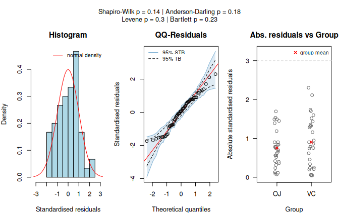
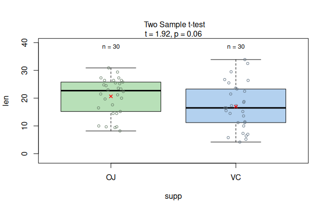
Student’s t-test applied to the ToothGrowth dataset
(supp vs. len). Assumption diagnostics and box
plots of odontoblast length by vitamin C delivery method with the
Student t-test result.
Welch’s t-test
The Motor Trend Car Road Tests dataset (mtcars)
contains 32 observations, where mpg denotes miles per (US)
gallon and am represents the transmission type
(0 = automatic, 1 = manual). With binary
factor am and continuous response mpg,
Shapiro–Wilk does not reject normality of the pooled residuals, while
the Levene test detects heteroscedasticity. The routing therefore leads
to Welch’s t-test rather than Student’s t-test.
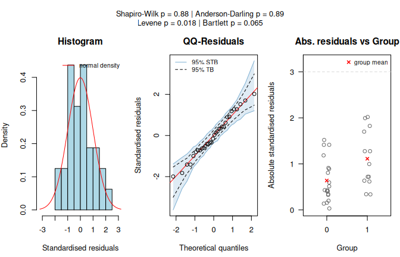
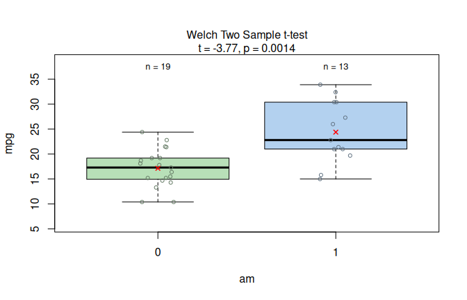
Welch’s t-test applied to the mtcars dataset
(am vs. mpg). Pooled-residual assumption
diagnostics (Shapiro–Wilk, Bartlett, Levene test) and box plots of fuel
efficiency by transmission type with the Welch t-test result.
Wilcoxon rank-sum test
The warpbreaks dataset records thread breaks during
weaving. Using wool type (A or B) as predictor
and the number of breaks as response, the Shapiro–Wilk test rejects
normality of the standardised residuals, so visstat()
selects the Wilcoxon rank-sum test.
wilcoxon_stats <- visstat(warpbreaks$wool, warpbreaks$breaks)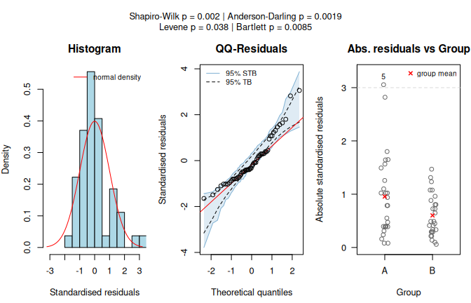
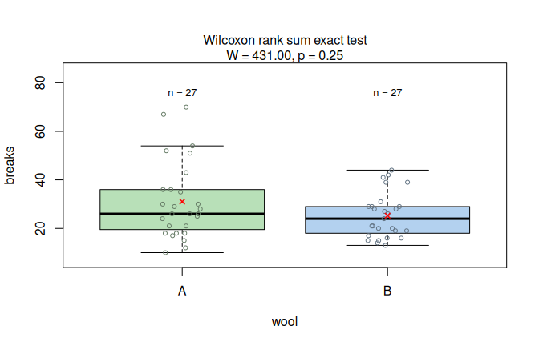
Wilcoxon rank-sum test applied to the warpbreaks dataset
(wool vs. breaks). Assumption diagnostics
(Shapiro–Wilk rejected on standardised residuals; non-parametric path
selected) and box plots with the Wilcoxon test result.
Wilcoxon rank-sum test with ordered response
The Titanic dataset contains passenger counts by, among
other variables, passenger class and gender. After expanding the table
to individual rows, passenger class is treated as ordered and gender as
a two-level predictor. visstat() converts the ordered
response to integer level codes and selects the Wilcoxon rank-sum
test.
titanic_df <- counts_to_cases(as.data.frame(Titanic))
titanic_df$Class <- ordered(titanic_df$Class,
levels = c("1st", "2nd", "3rd", "Crew"))
wilcox_ordered <- visstat(titanic_df$Sex, titanic_df$Class)## Warning: Ordered response detected. Converting to integer level codes for
## non-parametric analysis.
Wilcoxon rank-sum test for ordered passenger class by sex in the
expanded Titanic data. Ordered class is converted to
integer level codes; box plots show the Wilcoxon test result.
Numeric response and categorical predictor: more than two groups
Fisher’s one-way ANOVA with Tukey HSD post-hoc comparisons
The PlantGrowth dataset records yields (as measured by
dried weight of plants) for a control group and two treatment groups.
With control and treatment groups as predictor and plant weight as
response, Shapiro–Wilk does not reject normality of the pooled residuals
and levene.test() does not reject homoscedasticity, so
visstat() applies Fisher’s one-way ANOVA followed by Tukey
HSD post-hoc comparisons. The omnibus F-test is significant at
,
and the Tukey HSD post-hoc comparison finds no significant difference
between the control group and either treatment, but the difference
between trt1 and trt2 is significant.
anova_plantgrowth <- visstat(PlantGrowth$group, PlantGrowth$weight)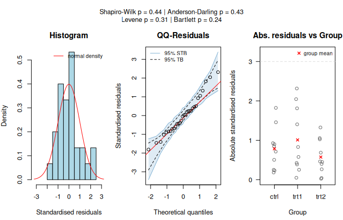
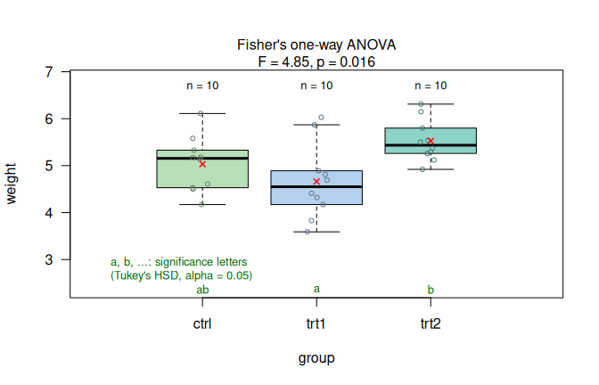
Fisher’s one-way ANOVA applied to the PlantGrowth dataset
(group vs. weight). Assumption diagnostics and
box plots of plant weight by treatment group; Tukey HSD post-hoc
comparisons are shown as significance letters
().
Welch’s heteroscedastic one-way ANOVA with Games–Howell post-hoc comparisons
In the iris dataset, using Species as
predictor and Sepal.Length as response, Shapiro–Wilk does
not reject normality of the standardised residuals, whereas the Levene
test rejects homoscedasticity. visstat() therefore selects
Welch’s heteroscedastic one-way ANOVA (oneway.test()) and
applies Games–Howell post-hoc comparisons.
welch_anova_iris <- visstat(iris$Species, iris$Sepal.Length)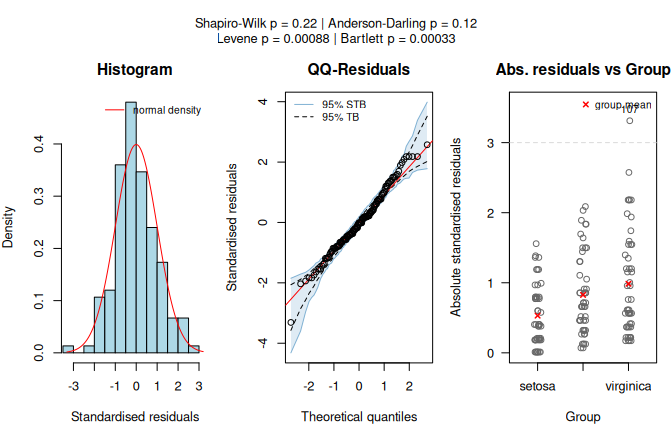
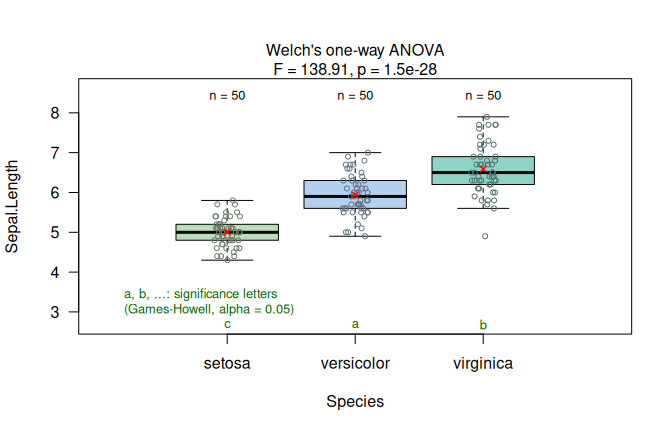
Welch’s heteroscedastic one-way ANOVA applied to the iris
dataset (Species vs. Sepal.Length). Assumption
diagnostics and box plots; Games–Howell post-hoc comparisons are shown
as significance letters
().
Kruskal–Wallis rank sum test with pairwise Wilcoxon post-hoc comparisons
For the same dataset, Petal.Width by
Species follows a different route. The standardised
residuals show clear departures from normality, and both normality tests
return very small
-values.
Since Shapiro–Wilk falls below
,
visstat() switches to kruskal.test() followed
by Holm-adjusted pairwise.wilcox.test(). All three species
differ significantly in petal width, as indicated by distinct
significance letters.
kruskal_iris <- visstat(iris$Species, iris$Petal.Width)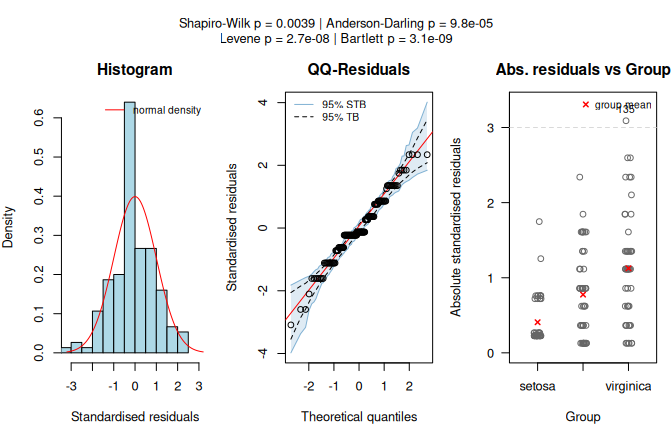
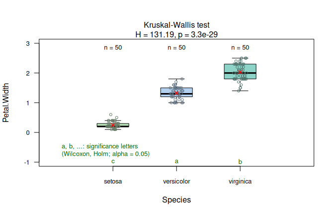
Kruskal-Wallis test applied to the iris dataset
(Species vs. Petal.Width). Assumption
diagnostics (Shapiro–Wilk rejected) and box plots; Holm-adjusted
pairwise Wilcoxon post-hoc comparisons are shown as significance letters
().
Kruskal–Wallis test with ordered response
When the response is an ordered factor and the predictor has more
than two levels, visstat() converts the ordered response to
integer level codes and routes to kruskal.test() followed
by Holm-adjusted pairwise.wilcox.test(). A synthetic survey
records perceived car comfort on a five-point scale across three
markets.
set.seed(123)
market <- factor(rep(c("Europe", "North America", "Asia"), each = 50))
comfort_numeric <- c(
sample(1:5, 50, replace = TRUE, prob = c(0.30, 0.30, 0.20, 0.15, 0.05)),
sample(1:5, 50, replace = TRUE, prob = c(0.10, 0.20, 0.40, 0.20, 0.10)),
sample(1:5, 50, replace = TRUE, prob = c(0.05, 0.10, 0.20, 0.35, 0.30))
)
survey_data_3 <- data.frame(
market = market,
comfort = ordered(comfort_numeric)
)
kruskal_ordered <- visstat(survey_data_3, "comfort", "market")## Warning: Ordered response detected. Converting to integer level codes for
## non-parametric analysis.Kruskal-Wallis test for ordered car comfort ratings by market. The ordered response is converted to integer level codes; box plots show the Kruskal-Wallis result; Holm-adjusted pairwise Wilcoxon post-hoc comparisons are shown as significance letters ().
Both variables numeric
Simple linear regression
The swiss dataset records standardised fertility and
socioeconomic indicators for 47 French-speaking Swiss provinces in 1888.
We examine how the share of draftees achieving the highest army
examination score (Examination) predicts the fertility
measure (Fertility), with conf.level = 0.99.
Both normality tests pass and the Breusch–Pagan test confirms
homoscedasticity, supporting the linear model.
linreg_swiss <- visstat(swiss$Examination, swiss$Fertility, conf.level = 0.99)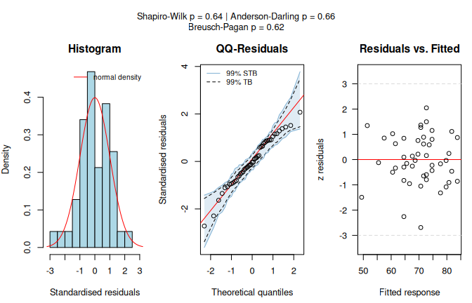
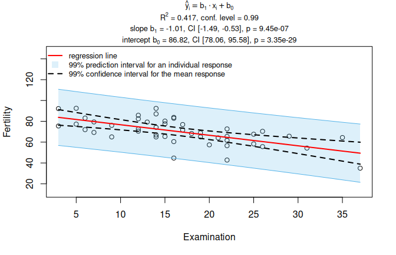
Simple linear regression of Fertility on
Examination for the swiss dataset
(conf.level = 0.99). Assumption diagnostics (Shapiro–Wilk,
Anderson–Darling, Breusch–Pagan) and scatter plot with fitted regression
line, 99% confidence band (dark shading), and 99% prediction band (light
shading).
The airquality ozone example shows the limits of the
automated approach when the default linear model is not an adequate
final model. visstat() identifies assumption violations and
points to analyses outside the automated decision tree. A default
visstat() call for ozone concentration (Ozone)
as a function of wind speed (Wind) fits the simple linear
model.
ozone_lm <- visstat(airquality$Wind, airquality$Ozone)## Warning: Statistical assumptions violated:
## Normality of residuals violated (Shapiro-Wilk p = 0.00522 )
## Homoscedasticity violated (Breusch-Pagan p = 0.00595 )
## Analysis proceeded but interpret results cautiously.## RECOMMENDATION: Consider exploring alternatives outside visstat() such as data transformations,
## generalised linear models, or robust regression. For a non-causal alternative
## consider rerunning with correlation = TRUE.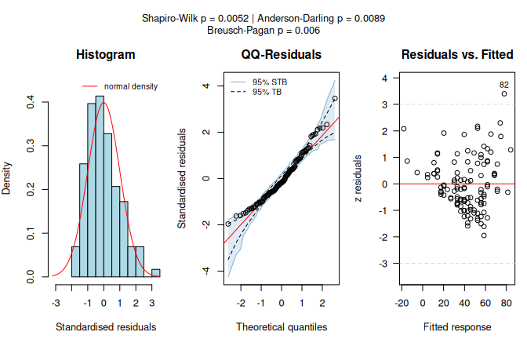
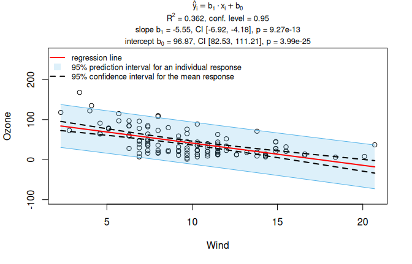
Default simple linear regression for Ozone by
Wind in the airquality dataset. Assumption
diagnostics flag non-normal standardised residuals and
heteroscedasticity before alternative routes are considered.
The diagnostic output flags non-normal standardised residuals and
heteroscedasticity. The printed recommendation suggests two possible
next steps: first, rerunning the analysis with
correlation = TRUE for a rank-based, non-causal Spearman
analysis within visstat(); second, exploring alternatives
outside visstat(), such as data transformations,
generalised linear models, or robust regression.
Spearman rank correlation
Correlation analysis requires the explicit flag
correlation = TRUE. For the ozone example, staying within
visstat() gives the following Spearman analysis:
spearman_air <- visstat(airquality$Wind, airquality$Ozone, correlation = TRUE)
Spearman rank correlation of Wind and Ozone
from the airquality dataset
(correlation = TRUE). Scatter plot on the original scale
with a rank-based trend line, annotated with
and the
-value.
Model exploration outside visstat()
As a model outside of visstat(), we fit a Gamma
generalised linear model with log link. The Gamma family is suited here
because Ozone is strictly positive and continuous, and its variance
grows with the mean — the structure detected by the Breusch–Pagan test.
The log link guarantees positive fitted values.
# Remove zeros to guarantee Gamma requirements
airquality_clean <- subset(airquality, Ozone > 0)
# Gamma model with log mapping
model_gamma <- glm(Ozone ~ Wind, data = airquality_clean, family = Gamma(link = "log"))
model_gamma$aic## [1] 1040.021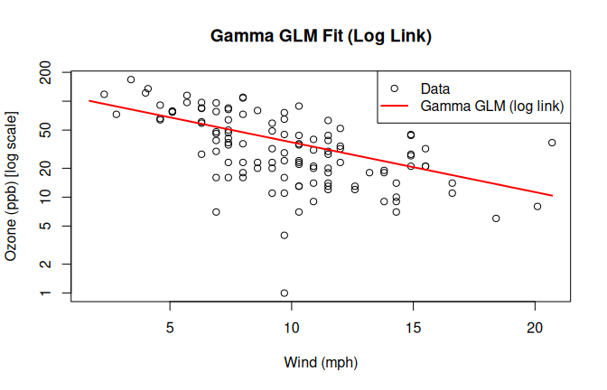
Gamma GLM with log link fitted to the airquality dataset
Wind vs. Ozone. The red curve shows the fitted
Gamma GLM; the y-axis is on a log scale.
For a well-fitting Gamma generalised linear model, standardised deviance residuals are asymptotically standard normal; we use Shapiro–Wilk and Anderson–Darling as approximate checks confirming that the Gamma distribution is much better suited to fit the data:
# Extract standardised residuals
std_dev_res <- rstandard(model_gamma, type = "deviance")
# Validate using the Shapiro-Wilk normality test
shapiro.test(std_dev_res)##
## Shapiro-Wilk normality test
##
## data: std_dev_res
## W = 0.99245, p-value = 0.7817
# Validate using the Anderson-Darling normality test
nortest::ad.test(std_dev_res)##
## Anderson-Darling normality test
##
## data: std_dev_res
## A = 0.198, p-value = 0.8853The Gamma GLM significantly improves the model fit, as evidenced by
the drop in the Akaike Information Criterion (Akaike 1974) from 1093.2 to 1040.0.
The increase in the Shapiro–Wilk
-value
from
in the simple linear regression to
indicates that the Gamma GLM successfully corrected the model
misspecification. Since the standardised deviance residuals no longer
show significant departures from normality, the heteroscedasticity is
successfully handled. This comparison demonstrates that when
visstat() signals a failure of the Gaussian framework,
moving to a GLM provides a statistically superior and valid
alternative.
Both variables categorical
The following examples are based on the HairEyeColor
contingency table, which is converted to the column-based data frame
expected by visstat() using
counts_to_cases().
Pearson’s test
With Eye and Hair from
HairEyeColor, all expected cell counts exceed the Cochran
thresholds (Cochran
1954), so the
approximation is used. For this
table, visstat() returns both a grouped bar chart of row
percentages and a mosaic plot with tiles coloured by Pearson residuals.
The mosaic plot shows which cells drive the association: blue tiles
indicate observed counts above expectation and red tiles indicate
observed counts below expectation.
hair_eye_df <- counts_to_cases(as.data.frame(HairEyeColor))
visstat(hair_eye_df$Eye, hair_eye_df$Hair)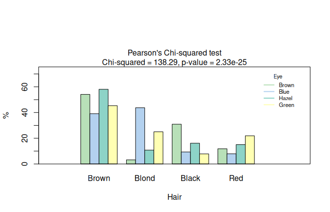
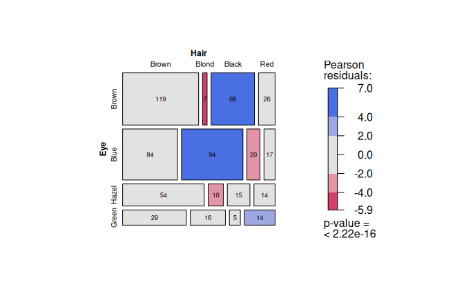
Pearson’s
test applied to the HairEyeColor dataset. Grouped bar chart
of eye colour by hair colour and mosaic plot with tiles coloured by
Pearson residuals (blue: over-represented, red: under-represented).
Pearson’s test with Yates’ continuity correction
Restricting HairEyeColor to black or brown hair and
brown or blue eyes yields a
table. Cochran’s rule is still satisfied, so visstat()
applies Pearson’s
test with Yates’ continuity correction.
hair_black_brown_eyes_brown_blue <- HairEyeColor[1:2, 1:2, ]
hair_black_brown_eyes_brown_blue_df <- counts_to_cases(
as.data.frame(hair_black_brown_eyes_brown_blue))
yates_stats <- visstat(hair_black_brown_eyes_brown_blue_df$Eye,
hair_black_brown_eyes_brown_blue_df$Hair)
Pearson’s
test with Yates’ continuity correction for a
subset of HairEyeColor (black/brown hair and brown/blue
eyes). Grouped bar chart of row percentages with the corrected test
result.
Fisher’s exact test
Restricting HairEyeColor to male participants with black
or brown hair and hazel or green eyes yields a
table where one expected frequency is less than 5, violating Cochran’s
rule (Cochran
1954). visstat() therefore applies Fisher’s
exact test. For
tables, the returned object also contains the conditional maximum
likelihood estimate of the odds ratio and its confidence interval.
hair_eye_male <- HairEyeColor[, , 1]
black_brown_hazel_green <- hair_eye_male[1:2, 3:4]
black_brown_hazel_green_df <- counts_to_cases(
as.data.frame(black_brown_hazel_green))
fisher_stats <- visstat(black_brown_hazel_green_df$Eye,
black_brown_hazel_green_df$Hair)
fisher_stats$estimate # odds ratio## odds ratio
## 0.5062015
fisher_stats$conf.int # 95% CI## [1] 0.07725895 2.40885255
## attr(,"conf.level")
## [1] 0.95
Fisher’s exact test applied to a
subset of HairEyeColor (male participants, black/brown
hair, hazel/green eyes). Bar chart of absolute counts with the
-value;
the odds ratio and confidence interval are accessible from the returned
object.
Ordered factors
When the response is ordered and the predictor is categorical,
visstat() converts the response to integer level codes and
redirects to the non-parametric Wilcoxon or Kruskal–Wallis path above.
When both variables are ordered factors, the same non-parametric path is
followed by default (correlation = FALSE); only with
correlation = TRUE does visstat() instead test
for a monotone association via Kendall’s
.
The Kendall output is a single jittered rank–rank scatter plot that
visualises the monotone trend, colour-codes points by the predictor
level, and annotates the plot with
and the
-value.
Kendall’s
A hypothetical survey of 150 secondary-school students records alcohol consumption frequency and academic performance on five-point ordinal scales. A negative monotone association is induced by construction: students who consume alcohol more frequently tend to have lower academic performance.
set.seed(42)
n <- 150
xs <- sample(1:5, n, replace = TRUE)
ys <- pmin(5, pmax(1, (6 - xs) + sample(-1:1, n, replace = TRUE)))
likert_alc <- c("never", "rarely", "sometimes", "often", "always")
likert_perf <- c("poor", "fair", "ok", "good", "great")
alcohol <- ordered(likert_alc[xs], levels = likert_alc)
performance <- ordered(likert_perf[ys], levels = likert_perf)
kendall_result <- visstat(performance, alcohol, correlation = TRUE)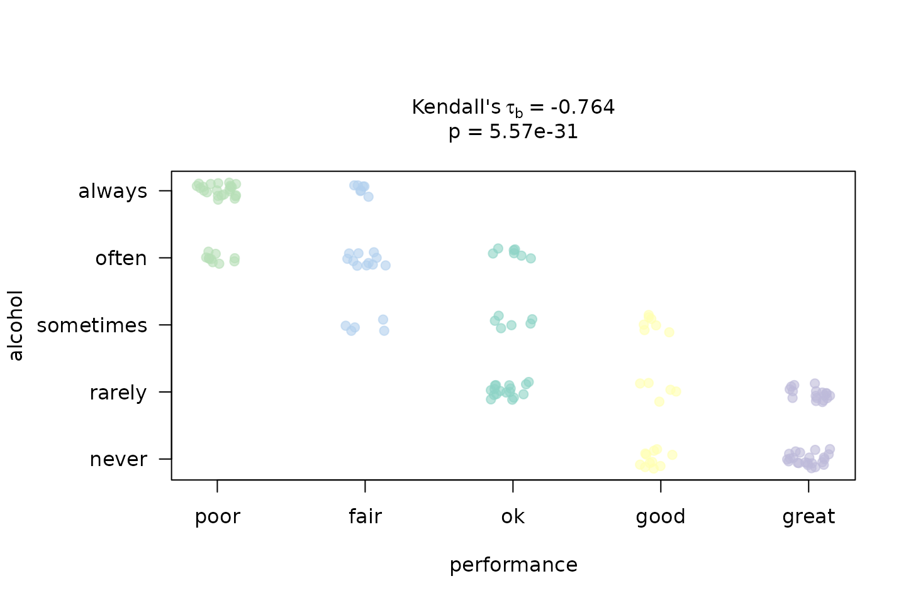
Kendall’s for a hypothetical survey (): alcohol consumption frequency vs. academic performance (both five-point ordinal scales). Jittered rank–rank scatter annotated with and the -value; the negative monotone association is significant.
The visstat methods
Objects returned by visstat() are of class
"visstat" and support the S3 methods print(),
summary(), and plot().
print()
print() lists the returned components.
anova_plantgrowth <- visstat(PlantGrowth$group, PlantGrowth$weight)
print(anova_plantgrowth)## Object of class 'visstat'
##
## Available components:
## [1] "summary statistics of ANOVA" "post-hoc analysis "
## [3] "conf.level" "effect_size"
summary()
summary() prints the full returned object, including
assumption tests, post-hoc comparisons, confidence level, and
effect_size where available.
summary(anova_plantgrowth)## Summary of visstat object
##
## --- Named components ---
## [1] "summary statistics of ANOVA" "post-hoc analysis "
## [3] "conf.level" "effect_size"
##
## --- Contents ---
##
## $summary statistics of ANOVA:
## Df Sum Sq Mean Sq F value Pr(>F)
## fact 2 3.766 1.8832 4.846 0.0159 *
## Residuals 27 10.492 0.3886
## ---
## Signif. codes: 0 '***' 0.001 '**' 0.01 '*' 0.05 '.' 0.1 ' ' 1
##
## $post-hoc analysis :
## Tukey multiple comparisons of means
## 95% family-wise confidence level
##
## Fit: aov(formula = samples ~ fact)
##
## $fact
## diff lwr upr p adj
## trt1-ctrl -0.371 -1.0622161 0.3202161 0.3908711
## trt2-ctrl 0.494 -0.1972161 1.1852161 0.1979960
## trt2-trt1 0.865 0.1737839 1.5562161 0.0120064
##
##
## $conf.level:
## [1] 0.95
##
## $effect_size:
## $name
## [1] "omega-squared"
##
## $estimate
## [1] 0.2040788
##
## $effect_size_method
## [1] "Omega-squared for one-way ANOVA"
plot()
plot() lists available plots by default. With
which, it either replays a captured plot or reports the
selected saved file path.
Interactive mode
When visstat() is called without a
graphicsoutput defined (the default interactive mode), the
generated plots are captured internally. Calling plot()
without which lists all available plots; calling it with
which replays the selected plot in the interactive R
session.
plot(anova_plantgrowth)## Plot [1] captured. Use plot(obj, which = 1) to display.## Plot [2] captured. Use plot(obj, which = 2) to display.
# Interactive only (not executed during vignette build):
plot(anova_plantgrowth, which = 2)Saved graphics
When visstat() is called with
graphicsoutput specified, plot() lists the
generated file paths instead. All generated graphics can be saved in any
file format supported by Cairo() (Urbanek and Horner 2025), including
“png”, “jpeg”, “pdf”, “svg”, “ps”, and “tiff”. If plotName
is provided, the main result plot uses this name. The
assumption-diagnostic plot adds the prefix
"glm_assumptions_". If plotName is not
provided, file names are generated from the selected plot type and the
input variable names.
In the following example, we store the graphics in png
format in the plotDirectory tempdir() using
the PlantGrowth Fisher’s ANOVA example. Here,
plotName is set explicitly so that the output names are
stable.
anova_plantgrowth_stored <- visstat(
PlantGrowth$group,
PlantGrowth$weight,
graphicsoutput = "png",
plotName = "anova_plantgrowth",
plotDirectory = tempdir()
)The full file paths of the generated graphics are stored as the
attribute "plot_paths" on the returned object of class
"visstat".
## [1] "glm_assumptions_anova_plantgrowth.png"
## [2] "anova_plantgrowth.png"Remove the graphical output from plotDirectory:
file.remove(paths)## [1] TRUE TRUEDiscussion
The design of visStatistics prioritises transparent,
reproducible routing for common two-variable analyses Chicco et al. (2025) over broad model coverage.
This scope keeps the decision tree inspectable and the graphical output consistent, but it also leaves several modelling choices (e.g. paired tests, interaction terms, multiple linear regression) outside the automated workflow. While one of R’s greatest strengths is the sheer volume of statistical methods available, incorporating a wider array of methods would require additional preliminary assumption checks, which in turn would exacerbate the risk of overall Type I error inflation. Furthermore, expanding the pipeline would result in a highly complex decision tree, rendering the underlying statistical logic increasingly opaque to the user.
visStatistics instead focuses on the
visualisation of the chosen test and, where applicable, its
post-hoc and assumption tests.
For tests of central tendency, the decision logic depends on p-values from these assumption tests. However, no single assumption test maintains optimal Type I error rates and statistical power across all distributions (Olejnik and Algina 1987), and p-values obtained from these tests may be unreliable if their assumptions are violated.
Moreover, assumption tests provide no information on the nature of
deviations from the expected distribution (Shatz 2024). Thus the assessment of
normality or homoscedasticity should never rely solely on p-values but
should be complemented by visual inspection of the diagnostic plots
generated by visstat().
This limitation extends to combinations of assumption tests. Combining tests for normality and homoscedasticity using simple majority voting inflates the overall Type I error rate. Based on the provided diagnostic plots, the user might overwrite the automated choice of test in individual cases.
The reported effect size should be interpreted alongside the -value, but it does not replace subject-matter judgment about practical relevance (Shatz 2024).
The limitation of p-value-based routing is particularly relevant for normality testing. Normality tests behave poorly at both ends of the sample-size range: with small samples they fail to detect non-normality, and with large samples they flag negligible departures from normality as significant (Ghasemi and Zahediasl 2012; Fagerland 2012; Franc 2025).
The threshold (see Decision logic) is motivated by simulation studies showing that moderately skewed distributions require roughly 40–50 observations for adequate convergence of the sampling distribution of the mean (Lumley et al. 2002; Fagerland 2012). For smaller samples, Shapiro–Wilk has the highest power among normality tests for small to moderate sample sizes (Razali and Wah 2011).
In the regression branch, violated assumptions are flagged in the
output. When this occurs, the package offers Spearman rank correlation
(correlation = TRUE) as a non-causal alternative to linear
regression. Further alternative methods such as data transformation,
generalised linear models or robust regression are not implemented: each
requires user judgment – about the transformation family, the link
function, or the estimator – that cannot be automated without
substantially expanding the decision tree and increasing the risk of
Type I error inflation.
Bootstrapping represents another possible alternative to
assumption-guided routing. Bootstrapping, as implemented for example in
the R package boot (Canty and Ripley 2025; Davison and Hinkley 1997), can
provide confidence intervals for a wide range of statistics. However,
bootstrapping is computationally intensive, often requiring thousands of
resamples, and may perform poorly with very small sample sizes. The
computational intensity of bootstrap runs counter to the purpose of the
visStatistics package, which is designed to offer a rapid
overview of the data, laying the groundwork for deeper analysis in
subsequent steps.
At the graphical level, this design is also kept deliberately
low-dependency. The package uses base R graphics and avoids a
ggplot2 (Wickham 2016) dependency, keeping
the transitive dependency footprint minimal. For more polished,
annotated plots of chosen statistical tests, we refer to packages such
as ggstatsplot (Patil 2021) or ggpubr
(Kassambara
2026).
Taken together, these scope decisions define
visStatistics as a rapid, inspectable first-line workflow
for routine two-variable inference rather than a replacement for
model-specific statistical analysis.
Conclusion
visStatistics is useful where test selection should be
reproducible, visible, and easy to audit. Its value is not that it
removes the user’s statistical judgment, but that it exposes the
assumptions, routing decisions, effect sizes, and plots that should
inform that judgment. The package therefore serves as a transparent
entry point for routine two-variable analyses, leaving model-specific
extensions to the analyst.
Appendix A: The general linear model
The general linear model provides a unified framework underlying Student’s t-test, Fisher’s ANOVA, and simple linear regression (Thompson 2015).
Let denote the number of observations and the number of predictors. The model for observation is:
where is the response for observation , is the value of predictor for observation , are the parameters, and are independently distributed error terms with constant variance .
Student’s t-test uses one binary indicator variable ; testing is equivalent to testing .
Fisher’s ANOVA uses indicator variables for groups; testing is equivalent to testing equality of all group means.
Simple linear regression uses one continuous predictor; testing examines whether a linear relationship exists. For simple linear regression, the effect size is measured by the coefficient of determination: , where is the residual sum of squares and is the total sum of squares.
In the two-sample case, the squared test statistic of Student’s
t-test equals the Fisher ANOVA test statistic,
,
resulting in identical
-values
for t.test(var.equal = TRUE) and aov().
Appendix B: The general linear model assumption diagnostics
vis_lm_assumptions()
All tests within the linear model framework (see Appendix A) share a common set of assumptions:
Linearity: The expected value of the response is a linear function of the predictors; assessed by checking for systematic patterns in residual plots.
Error terms are independent and normally distributed with expectation 0 and constant variance
The function vis_lm_assumptions() provides a unified
visual and statistical framework for checking the linear
model assumptions. It fits a linear model using aov()
and provides four standard diagnostic plots:
Histogram and Normal Density: Displays the distribution of standardised residuals with a red normal density curve overlay to visually assess normality.
Std. Residuals vs. Fitted: Standardised residuals against fitted values with a zero-line to detect non-linearity or heteroscedasticity.
Normal Q-Q Plot: A theoretical quantile-quantile plot using the standardised residuals to identify deviations from the Gaussian distribution.
For numeric predictors with
correlation = FALSE, the Standardised Residuals vs. Leverage plot is shown; otherwise, a Scale-Location plot is shown.
Tests for normality and homoscedasticity
The diagnostic plots are enhanced by p-values of tests for normality and homoscedasticity, shown in the title of the plot.
Normality Assessment: The function evaluates
residual normality using both the Shapiro–Wilk test
(shapiro.test()) and the Anderson–Darling test
(ad.test()) (Gross and Ligges 2015).
Homoscedasticity Assessment: Variance equality is
tested using the Levene test (levene.test()) (Brown and Forsythe
1974) and Bartlett’s test (bartlett.test()) in
the ANOVA path.
These tests compare the spread of data across different factor levels.
For simple linear regression, the Breusch–Pagan test
(bp.test()) is implemented.
levene.test() and bp.test() have standalone
implementations in the package to avoid dependencies on external
packages (see Appendix C).
Appendix C: Test statistics and association measures
Normality tests
The package displays both the Shapiro–Wilk test and the Anderson–Darling test to check the normality of the studentised residuals , where are the raw residuals, is the residual mean square, and is the leverage of observation (Cook and Weisberg 1982).
Shapiro–Wilk test shapiro.test()
The Shapiro–Wilk test evaluates whether a sample comes from a normal distribution. Let be its order statistics. Introduce a reference sample of independent standard normal random variables, i.e. for all , and let be their order statistics used to construct the Shapiro–Wilk weights.
Let and for . Define and .
The vector contains the expected standard-normal order statistics, and is their covariance matrix. Let be the resulting vector of normalised weights for the ordered observed sample values
Then the Shapiro–Wilk statistic is (Shapiro and Wilk 1965)
takes values in ; values close to 1 indicate normality.
Anderson–Darling test ad.test()
The Anderson–Darling test (Anderson and Darling 1952) is particularly sensitive to deviations in the tails of the distribution (Razali and Wah 2011; Yap and Sim 2011). Let be the standardised order statistics of , where is the sample standard deviation, and let denote the standard normal cumulative distribution function. The test statistic is
The implementation uses ad.test() from
nortest (Gross and Ligges 2015).
Homoscedasticity tests
The Brown–Forsythe Levene-type test levene.test()
The package implementation uses Levene’s original proposal (Levene 1960)
with the Brown–Forsythe median-centred modification (Brown and Forsythe
1974), making it robust to skewed data and outliers (Allingham and Rayner
2012). The package’s own function levene.test()
is the sole driver of the parametric/Welch branching decision.
For each observation in group , the absolute deviation from the group median is
The test statistic is the -statistic from a one-way ANOVA on the values:
where is the number of groups, is the total sample size, is the sample size of group , is the mean of the absolute deviations within group , and is the overall mean of all absolute deviations. Under the null hypothesis of equal variances the statistic follows .
Bartlett’s test bartlett.test()
Bartlett’s test (Bartlett 1937) has greater power than the Brown–Forsythe Levene-type test when normality holds (Allingham and Rayner 2012). Its test statistic is
where is the number of groups, is the total sample size, is the sample size of group , is the sample variance of group , and is the pooled variance
Under the null hypothesis the statistic approximately follows .
Breusch–Pagan test bp.test()
For simple linear regression, group-based variance tests are not
applicable. The package implementation bp.test() performs
the Breusch–Pagan test (Breusch and Pagan 1979), which
assesses whether the variance of the residuals from the regression model
depends on the predictor values. Let
be the residuals from the fitted regression model and let
denote the mean of the squared residuals. The auxiliary regression
models
as a function of the predictors. Let
denote the coefficient of determination from this auxiliary regression.
Crucially, while a high
is typically a sign of a strong model, here it indicates a failure of
the constant-variance assumption: a higher
means the error variance follows a systematic, non-random pattern. The
Breusch–Pagan statistic is then calculated as:
which is compared asymptotically to a distribution with degrees of freedom equal to the number of predictors in the auxiliary regression.
Student’s t-test and Welch’s t-test
The test statistic for Student’s t-test
(t.test(..., var.equal = TRUE)) is
where and are the sample means, and the sample sizes, and the pooled standard deviation
with and the sample variances. The statistic follows a -distribution with degrees of freedom.
Welch’s t-test (t.test(..., var.equal = FALSE)) relaxes
the homoscedasticity assumption. Its
statistic is
with degrees of freedom approximated by the Welch–Satterthwaite equation:
Welch’s methods outperform their classical counterparts when variances differ (Moser and Stevens 1992; Fagerland and Sandvik 2009; Delacre et al. 2017).
Wilcoxon rank-sum test
The two-level factor x defines two groups with sample
sizes
and
.
All
observations are pooled and assigned ranks
to
.
Let
denote the rank sum of the first group, where
is the rank of observation
in the pooled sample. The test statistic returned by
wilcox.test() is the Mann–Whitney
statistic (Mann and
Whitney 1947) of the first group:
An exact -value is computed when both groups contain fewer than 50 observations and the data contain no ties; otherwise a normal approximation with continuity correction is used.
Fisher’s one-way ANOVA and Welch’s heteroscedastic ANOVA
Fisher’s ANOVA test statistic is
where
and
are the between-group and within-group mean squares,
and
are the corresponding sums of squares,
is the number of groups,
is the total sample size,
is the mean of group
,
is the overall mean, and
is observation
in group
.
Under the null hypothesis
.
Post-hoc comparisons use Tukey’s Honest Significant Differences
TukeyHSD(), which controls the family-wise error rate.
Welch’s heteroscedastic ANOVA (oneway.test())
down-weights groups with large variance.
Its test statistic is
where are the inverse-variance weights, , and is the weighted grand mean. Degrees of freedom are adjusted via a Satterthwaite-type approximation.
Post-hoc comparison games.howell()
Post-hoc comparisons use the package implementation
games.howell() (Games and Howell 1976). For each
pairwise comparison, the two groups are denoted as 1 and 2. The function
computes
with standard error
and test statistic
The degrees of freedom use the Welch–Satterthwaite equation given
above. Two-sided
-values
are computed from the corresponding
distribution and then adjusted with Holm’s method (Holm 1979).
Confidence intervals are computed as
and are not adjusted for multiple comparisons. Significant letter
displays are produced by multcompLetters() from
multcompView (Graves et al. 2026).
Kruskal–Wallis test
When normality is rejected, kruskal.test() tests whether
the groups come from the same population based on ranks:
where
is the sample size of group
,
is the number of groups,
is the average rank of group
,
is the total sample size, and
is the expected average rank under the null hypothesis. The statistic
approximately follows
.
Post-hoc comparisons use Holm-adjusted
pairwise.wilcox.test() (Holm 1979).
Pearson’s test and Fisher’s exact test
Let and denote the observed and expected frequencies in row and column of an contingency table, where rows index the levels of the response and columns the levels of the predictor . The Pearson residual for cell is
The test statistic of Pearson’s test is
compared to
.
For
tables, Yates’ continuity correction is applied by default. For general
tables, visstat() supplements the bar chart with a mosaic
plot in which tiles are coloured by
(blue: positive, red: negative).
Fisher’s exact test (fisher.test()) is applied when
Cochran’s rule (Cochran 1954) is violated. The test calculates an exact
-value
by conditioning on the observed margins of an
contingency table. Let
denote the observed table. To maintain consistency with the
y ~ x (response ~ predictor) framework used throughout
visStatistics, rows
()
represent the levels of the response variable
and columns
()
represent the levels of the predictor
.
The row totals are
and the column totals are
.
In the case (), the table is structured as follows:
The exact probability of observing this table under the null hypothesis of independence, given the fixed margins, is given by the hypergeometric probability mass function:
where
is the total sample size. The
-value
is computed by summing the probabilities of all tables with the same
margins whose probabilities under the null are less than or equal to
that of the observed table. For general
tables, fisher.test() generalises this approach using the
multivariate hypergeometric distribution. For
tables, fisher.test() additionally returns the conditional
maximum likelihood estimate of the odds ratio
and its confidence interval.
Rank Association Measures
Spearman rank correlation
For two numeric variables with correlation = TRUE,
visstat() calls
cor.test(x, y, method = "spearman") to measure the
monotonic association between
and
using ranks. Spearman’s
is Pearson’s
applied to the ranks:
where denotes Pearson’s correlation coefficient:
Here and are the ranks of the paired observations, and and are their sample means.
For inference, cor.test(..., method = "spearman")
computes an exact
-value
for small samples without ties by evaluating all
rank permutations. For larger samples or when ties are present, it uses
an approximation to the null distribution of the rank association
measure or its asymptotic transformation. No distributional assumptions
on the original data are required.
A separate Pearson-correlation branch is not implemented. In simple linear regression with an intercept, the two-sided test of zero slope and the two-sided test of zero Pearson correlation return the same -value. Pearson correlation would therefore not add a separate inferential route to the default regression branch.
Kendall’s
For two ordinal variables with joint observations, let denote the number of concordant pairs (those whose ranks agree in both variables) and the number of discordant pairs. Kendall’s is defined as
where , with denoting the sizes of tie groups in the response, and with denoting the sizes of tie groups in the predictor. The denominator correction makes attain even with ties, which Spearman’s does not (Kendall 1945). With few ordered levels (e.g., five-point Likert items), ties are unavoidable; this is the principal reason to prefer over Spearman’s in this setting (Agresti 2010).
visstat() calls
cor.test(as.numeric(y), as.numeric(x), method = "kendall", exact = FALSE)
and reports
,
the asymptotic test statistic
,
and the two-sided
-value.
Appendix D: Effect size
Statistical significance is strongly affected by sample size, while effect-size estimates are intended to support comparisons across studies regardless of sample size (Levine and Hullett 2002).
To avoid additional package dependencies, effect_size()
extracts, where possible, the effect sizes from base R
stats output where available and implements the remaining
formulae internally (Hedges 1981; Kerby
2014; Olejnik and Algina 2003; Ben-Shachar et al. 2020; Kelley 1935; Bergsma 2013).
| Analysis | R call | Effect size | Formula | Source |
|---|---|---|---|---|
| Student’s -test | t.test(..., var.equal = TRUE) |
Hedges’ (pooled) | (Hedges 1981) | |
| Welch’s -test | t.test(..., var.equal = FALSE) |
Hedges’ (non-pooled) | (Hedges 1981) | |
| Wilcoxon rank-sum | wilcox.test() |
rank-biserial | (Kerby 2014) | |
| Fisher’s ANOVA | aov() |
(Olejnik and Algina 2003) | ||
| Welch’s ANOVA | oneway.test() |
(approx.) | (Ben-Shachar et al. 2020) | |
| Kruskal–Wallis | kruskal.test() |
Kelley-adjusted | (Kelley 1935) | |
| Linear regression | lm() |
see coefficient of determination | summary(lm())$r.squared |
|
| Spearman | cor.test(method = "spearman") |
see Spearman rank correlation | cor.test()$estimate |
|
| Kendall | cor.test(method = "kendall") |
see Kendall’s | cor.test()$estimate |
|
| Pearson () | chisq.test() |
Cramér’s | (Bergsma 2013) | |
| Pearson () | chisq.test() |
(Bergsma 2013) | ||
| Fisher’s exact () | fisher.test() |
odds ratio | see odds ratio | fisher.test()$estimate |
where
:
Hedges’ small-sample correction factor,
,
:
non-pooled average-variance standardizer,
,
,
:
numerator and denominator degrees of freedom; for Fisher’s ANOVA,
and
;
for Welch’s ANOVA,
and
are returned by oneway.test().
All other variables used in the formulae above are defined in the corresponding “Analysis” section.